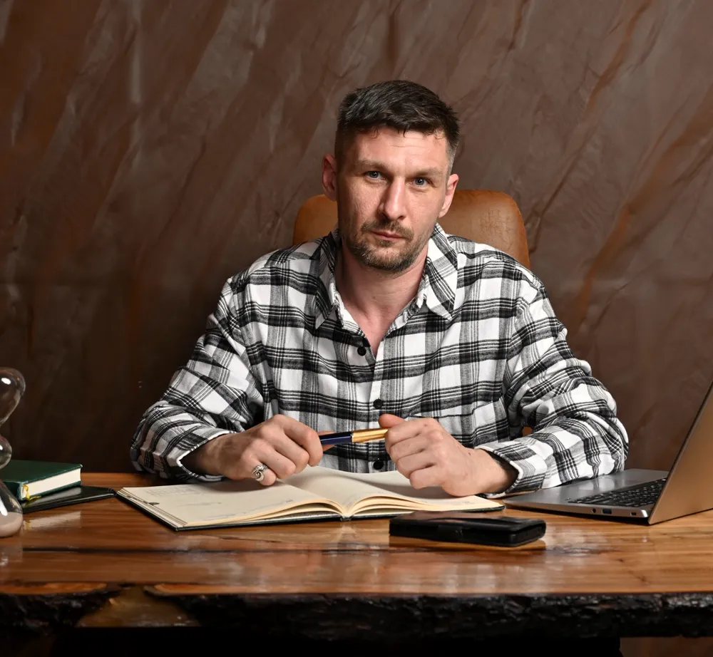
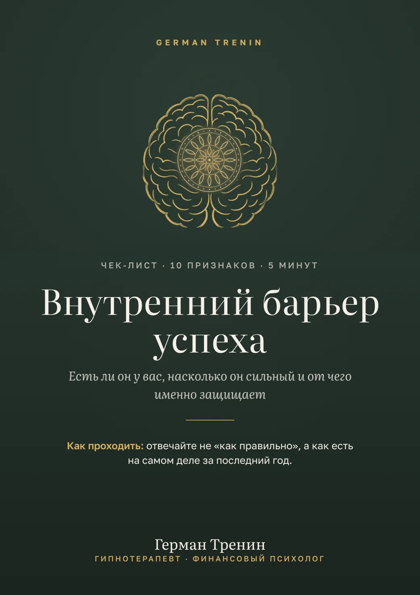

Финансовый психолог онлайн
Достаток — это когда о деньгах не нужно думать каждый день.
Найдём, что мешает этому случиться.
Тебе сложно достаются деньги? Настоящая причина находится внутри тебя! Во время диагностики ты её узнаешь.
Приобретая мою программу, ты переписываешь свою судьбу.
Десятки живых людей — у каждого свой запрос и своя история.
Смотреть видеоотзывы

Со стороны кажется, что у тебя всё в порядке.
Только ты знаешь, сколько сил уходит, чтобы это так выглядело.
- Когда у тебя спрашивают, сколько стоит твоя услуга, всё внутри сжимается. Тебе комфортнее выполнять работу, чем называть ценуПосле работы со мной Ты уверенно называешь цену, легко предлагаешь свою услугу. Легко отказываешь тем, кому ты не по карману
- У тебя есть желания, но внутри каждая клетка знает, что вряд ли получитсяПосле работы со мной Каждая клетка знает, что ты имеешь полное право брать то, что хочешь
- Откладываешь задачи, которые очевидно ведут к результату, отвлекаешься, избегаешьПосле работы со мной Твой фокус и эффективность работают на тебя
- Твой уровень дохода на протяжении всей жизни плюс-минус одинаковый, но с годами его всё сложнее удерживатьПосле работы со мной Привычная сумма перестаёт быть пределом. Ты становишься увереннее, дороже и успешнее
- Проходишь платные курсы, учишься, но действовать продолжаешь как раньшеПосле работы со мной Ты применяешь свои навыки и знания без ограничений. Это повышает качество всей твоей жизни
Узнаёшь себя хотя бы в двух строках? Значит, внутри тебя работает программа, которая ограничивает твои возможности. Я найду её и поправлю код вместе с тобой!
German TreninГипнотерапевт · Финансовый психолог онлайн
Ты управляешь многим.
Кроме одной настройки
Скорее всего, ты уже пробовал(а): курсы, книги, коучинг, финансовые планы. Они дают знания, и знания работают. Доход ненадолго поднимается, а потом возвращается к знакомой сумме, как будто его кто-то держит.
Держат его твои собственные решения, о которых ты давно забыл(а). Когда-то, в момент, когда было страшно, одиноко и помочь было некому, ты решил(а), как жить безопаснее: не высовываться, не просить, не рассчитывать на лёгкое. Эмоция той ситуации так и осталась неразрешённой, а решение продолжает работать. Так и выставляется планка. Ты смотришь на деньги, клиентов и возможности сквозь неё и даже не замечаешь этого.
Поэтому знания и не помогают. Они обращаются к взрослому, который понимает, что делать, а решение принимал человек в совсем другом состоянии.
Диагностическая сессия длится до двух часов. За это время причины выходят на поверхность: ты видишь, какие события и решения стоят за твоими трудностями с деньгами, и от чего ты до сих пор себя защищаешь.
Ты впервые ясно понимаешь, что на самом деле происходило все эти годы в твоей жизни и почему. Диагностика позволит составить уникальный последовательный маршрут дальнейших действий — как для тебя, так и для меня.
Как это работает
Мы не уговариваем себя и не боремся с привычками. Мы меняем настройку через ресурсное состояние психики.
Панель управления жизнью закрыта
И это правильно. Представь, что при каждой смене настроения ты мог(ла) бы переставлять опоры фундамента своего дома. Одна вспышка злости или страха — и дом пошёл бы трещинами. Поэтому психика держит доступ закрытым.
Ресурсное состояние открывает доступ
Ты в ясном сознании и всё контролируешь. Но в этом состоянии открывается твоя внутренняя панель управления: убеждения о деньгах, страхи, старые сценарии. Ты видишь, что держит планку, и сам(а) её переставляешь.
Новая настройка работает сама
Сессия заканчивается, а новая настройка остаётся с тобой: в решениях, в ценах, в отношении к деньгам и к отдыху. Её не нужно поддерживать усилием.
Что говорят люди после работы
Нажми на лицо — видео откроется в маленьком окне, и его можно смотреть, листая страницу дальше.
Как начать
Три шага. Первый ни к чему не обязывает.
Знакомство
Рассказываешь о запросе. Я честно говорю, могу ли помочь. Если нет — так и скажу.
Диагностика
Открываем твою внутреннюю панель и находим, где стоит планка и что её держит. Ты сам(а) видишь и чувствуешь свои ограничения и уходишь с ясным планом.
Программа
Серия сессий, чтобы переставить планку и закрепить новую настройку. Состав и срок определяем по итогам диагностики.
Гипнотерапевт с экономическим образованием
Меня зовут Герман Тренин, я финансовый психолог с экономическим образованием. Как экономист я знаю, что у любой рабочей модели должна быть ясная выстроенная структура и подробный расчёт. Как гипнотерапевт я знаю, что выполнять эти важные для успеха шаги человеческая психика просто отказывается без объяснения причин.
Сначала я прошёл этот путь сам! В самом начале я смотрел на своё отражение в зеркале и не был доволен. Потом улыбнулся ему раз, другой, и увидел, что это работает. Благодаря этому опыту я на клеточном уровне понял, что могу менять свою судьбу. Повышать качество жизни. Каждая новая ступень не поддавалась сразу, предоставляя мне возможность разобраться в причинах. И устранять их. Затем я получил профессиональную подготовку, собрал знания и свой опыт в метод работы через ресурсное состояние психики.
Сегодня я помогаю людям увидеть и убрать настоящую причину той проблемы, с которой приходят ко мне. Каждый человек имеет свою индивидуальную и важную причину, которую необходимо раскрыть и прожить. Поэтому глобальные методы, рассчитанные на массы, такие как книги или курсы, не могут дать устойчивого эффекта. Мой подход решает именно твою проблему.
Чтобы деньги приходили без борьбы и оставались без страха.
Telegram-канал «Архитектор ресурса»: разборы и упражнения о деньгах.
Нажми на документ, чтобы рассмотреть его крупно
Частые вопросы
Я буду в сознании и смогу себя контролировать?
Да. Ресурсное состояние психики — это не сон и не отключение. Ты всё слышишь, помнишь и в любой момент можешь остановиться. Против своей воли ты ничего не скажешь и не сделаешь.
Это не эзотерика?
Нет. Никаких «денежных потоков», чакр и ритуалов. Мы работаем с убеждениями и реакциями, которые ты сам(а) видишь во время сессии и потом замечаешь в своих решениях.
Чем это отличается от обычной консультации психолога?
Обычная консультация помогает осознать ситуацию и выработать к ней новое отношение. Я работаю глубже: с применением гипнотерапии мы открываем внутреннюю панель управления и меняем саму настройку, из которой складываются твои реакции и решения. Это не замена врачу, а другой инструмент.
Я уже пробовал(а) курсы и коучинг. Почему это сработает?
Курсы и коучинг работают со знаниями и мотивацией. Планка выставлена глубже, там, куда знания не доходят. Мы работаем именно с ней.
Можно ли работать онлайн?
Да. Я работаю как психолог онлайн с клиентами из разных стран и подбираю время с учётом часового пояса. Нужны спокойное место, наушники и стабильный интернет.
Сколько стоит работа?
Ознакомительная беседа на 15 минут — бесплатно. Стоимость диагностики и программы зависит от запроса: её я называю на знакомстве, когда понимаю твою ситуацию. Без скрытых платежей.
Есть ли противопоказания?
Да. Работа в ресурсном состоянии психики не заменяет медицинскую и психиатрическую помощь. Я не работаю с острыми психическими состояниями, психозами и эпилепсией. В таких случаях направляю к врачу. Полный список противопоказаний

Бесплатный чек-лист · 5 минут
Внутренний барьер успеха
10 признаков, что твой доход упирается не в рынок, а в настройку внутри. Отметь, что про тебя, и узнай, есть ли у тебя запрет, насколько он сильный и от чего именно защищает.
Прямо на сайте, без регистрации. Ответы остаются только в твоём браузере.
Узнай, что держит твой доход. Одна сессия — и ты видишь причину
Выбери удобное время — бот в Telegram покажет свободные окна и сразу запишет тебя. 15 минут, бесплатно: ты расскажешь о запросе, а я честно скажу, чем могу помочь.
Будни, 15:00–22:00 по Москве
Удобнее переписка? Написать в WhatsApp — отвечаю в течение дня.
Если по какой-либо причине ты не можешь открыть мессенджер и связаться со мной, напиши на почту: germanproff148 (собака) gmail.com
Смотришь с компьютера? Наведи камеру телефона на нужный код.